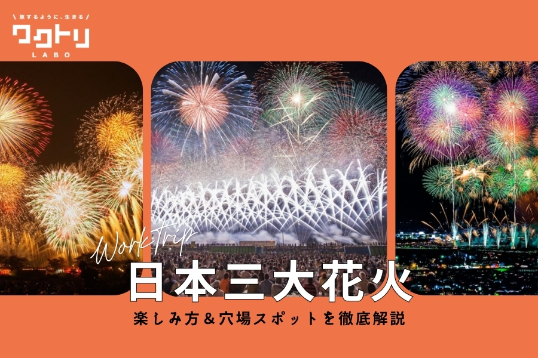
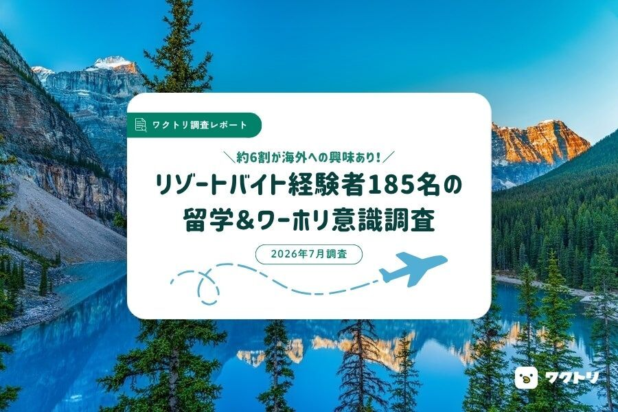

<!-- ========================================
     コラムアイキャッチ制作例
======================================== -->
<div class="sub-work labo-eyecatch-work">

    <div class="sub-work__heading">

        <h4>コラムアイキャッチ制作例</h4>

        <p>
            記事のテーマや検索ユーザーを意識して制作した
            コラム記事のアイキャッチ画像です。
        </p>

    </div>


    <div class="gallery gallery--three labo-eyecatch-gallery">

        <a
            href="images/labo-eyecatch01.jpg"
            target="_blank"
            rel="noopener"
        >
            
        </a>

        <a
            href="images/labo-eyecatch02.jpg"
            target="_blank"
            rel="noopener"
        >
            
        </a>

        <a
            href="images/labo-eyecatch03.jpg"
            target="_blank"
            rel="noopener"
        >
            
        </a>

    </div>

</div>
